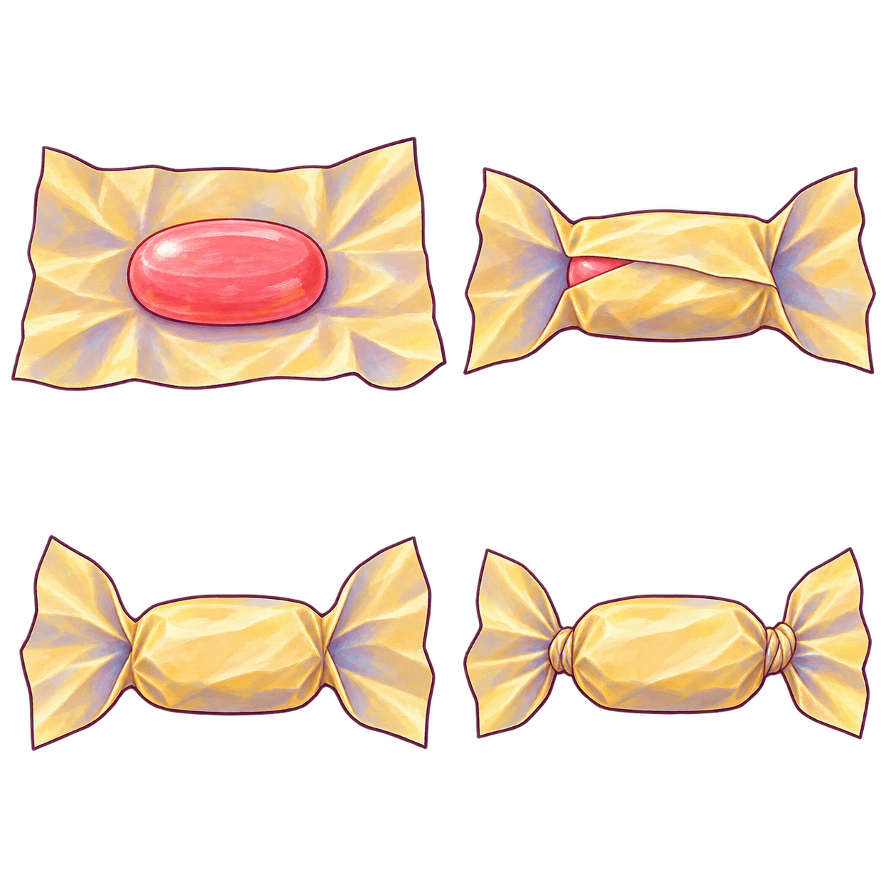
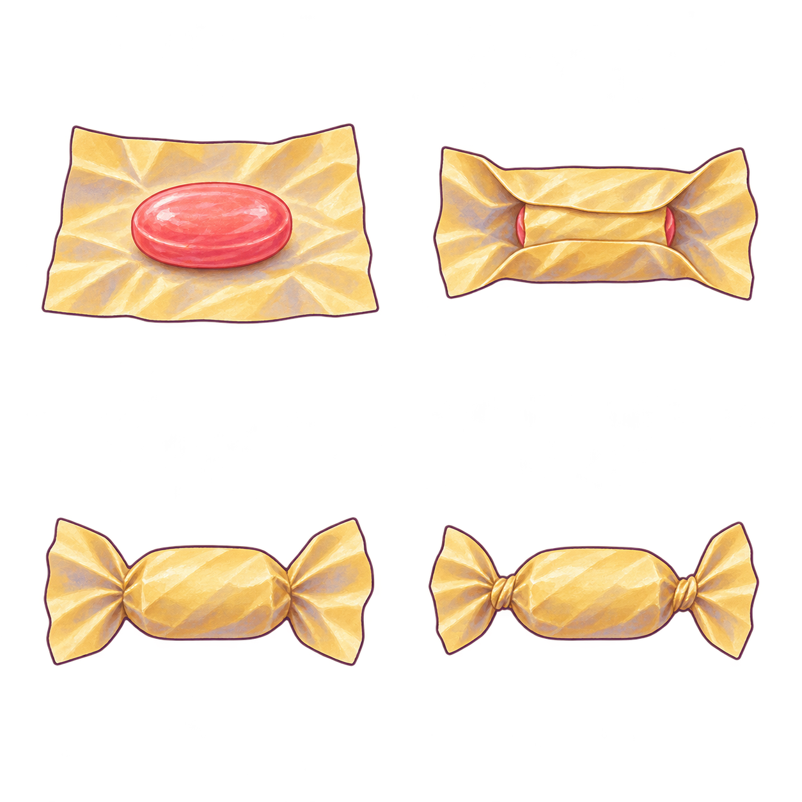
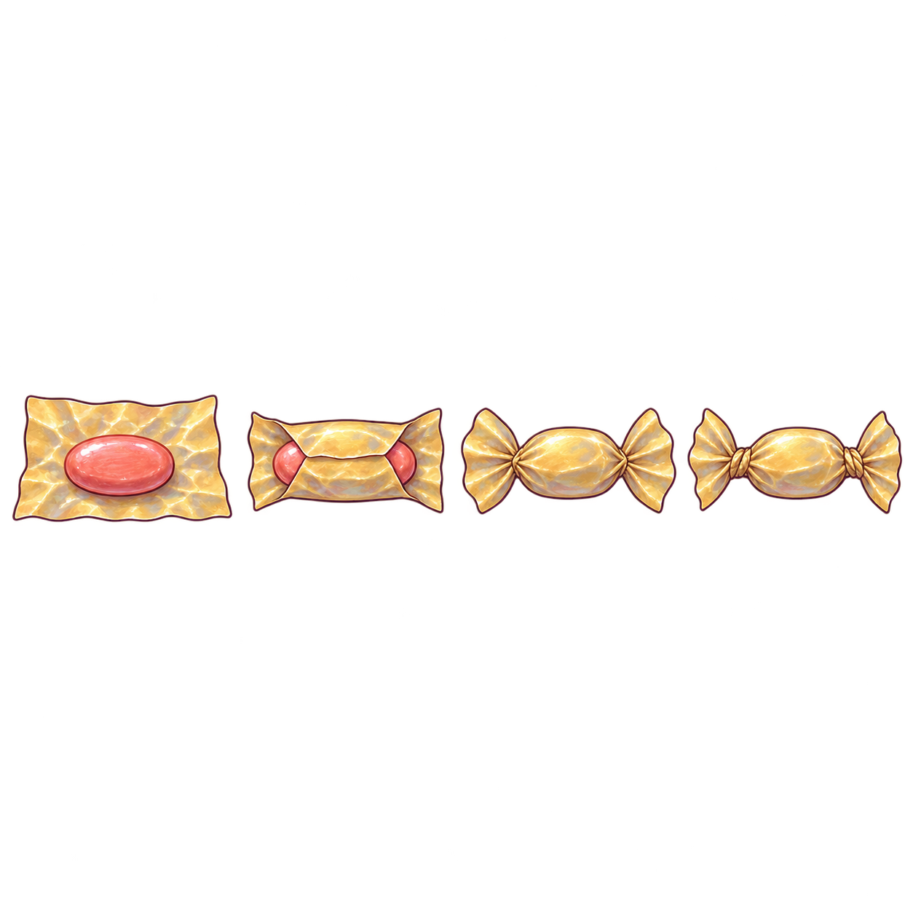

Candy Maker · golden wrapping-paper source iterations
Three preserved ImageGen wrapping-source attempts. Material and endpoint meaning are separate from atlas isolation, hand contact and motion. Current production still uses flat polygons.
Current game audit · Connected hand sources
Attempt 1 · A1_ATLAS_USE_REJECTED_REGENERATE

open candy and paper 4.5/5. Coral sweet has broad painted body and an authored plum contour; wax-paper creases read clearly. Isolated source appearance only, not mounted action.
folded paper 4.5/5. Two broad overlapping folds visibly cover the same coral body while the ends stay continuous with the paper. Isolated appearance only.
covered body/open ends 4.5/5. Painted gold paper completely conceals the sweet, with continuous pinched necks and open fans. Source silhouette reads as wrapping rather than loose triangles.
twisted ends 4.6/5. Both end necks carry diagonal twist creases and remain attached to the wrapper. This is a legible static endpoint, not motion/contact acceptance.
atlas isolation/alignment 3.8/5. The two upper subjects touch/cross the central vertical boundary at alpha128, so627-square cells clip or include their neighbours. Upper visible centroids are about93–103 native pixels lower within their cells than the lower subjects. Do not bind this atlas or repair those generated pixels; regenerate with proper gutters and consistent centers.
complete usable atlas 3.8/5. The four attractive stills cannot be treated as accepted runtime state art while isolation/alignment fails. No automatic quality promotion from individual style scores.
Native provenance · Exact opinions
Attempt 2 · A2_MATERIALS_REUSABLE_FIXED_CELL_ALIGNMENT_BELOW_FLOOR

open candy and paper 4.6/5. Clear coral sweet on a warm-gold painted sheet. Creases and plum contour integrate much better with the game materials than the flat live oval.
folded paper 4.5/5. Visible paper overlaps cover the belly, with small coral ends still exposed; broad folds explain coverage. The body and folded sheet retain the same pastel material identity.
covered body/open ends 4.5/5. Connected fans and necks make the wrapper continuous with the concealed body. Static source appearance only.
twisted ends 4.6/5. Two attached fans terminate in clear spiral neck creases; no extra loose gold triangles. Strong static endpoint.
atlas isolation 4.5/5. All four alpha128 subject bounds stay inside their cells with visible gutters. Low-alpha edge residues are retained and still require in-context alpha review.
fixed-cell alignment 4.2/5. Both top subjects center at local y349.5; lower subjects at 298/297. A fixed627-square region would jump about52 native pixels on coverage, and left/right x centers differ about25. Do not present aligned runtime action as proven. Use a fresh one-row generation to remove this layout defect.
complete fixed-cell atlas 4.2/5. Material appearance passes provisionally; fixed-cell state changes remain below floor. No runtime or action binding.
Native provenance · Exact opinions
Attempt 3 · SOURCE_MATERIAL_PROVISIONAL_STANDARD_VARIABLE_REGION_SAMPLING_REQUIRED

open paper/coral candy 4.5/5. Broad painted creases and one supported coral sweet read clearly; material reference only.
long-edge fold 4.5/5. Attached upper/lower flaps cover the same sweet with coral tips still visible.
neck pinch/untwisted fans 4.5/5. Attached narrow necks and full outside fans are distinct from current detached triangles.
twisted final ends 4.6/5. Spiral neck folds clearly communicate tightened attached paper.
single-row source isolation 4.5/5. Four painted objects separated by visible transparent gutters. Alpha128 column runs measured read-only; use correct variable source regions, not quarter windows that cross the first subject.
default equal-quarter sampling 4.1/5. First paper crosses its nominal quarter boundary. Other keys vary in center and size. A mathematically convenient quarter atlas would clip or leak a neighbor.
complete source drawing 4.5/5. Provisionally reusable material/state source with measured variable regions. Exact mapped runtime/contact and production 1024/POT preparation are pending; no motion pass.
Native provenance · Exact opinions